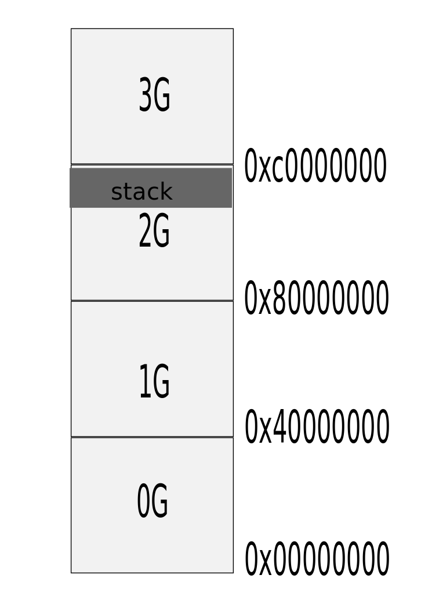
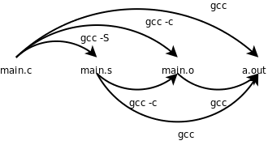

第19章 汇编与C的关系
第一节 栈与栈帧
- 复习前面的知识点。
- 本节用到的知识旧点 -g objdump -dS
- 讲述过程：有大体的认识->反汇编分析
栈是一块内存存储空间，分配栈这块虚拟地址空间的位置由系统完成，
linux中，将虚拟内存分为两部分，内核区与用户区，内核区占用高1GB
剩下的3GB是用户区域。用户区又分成几个部分。栈就是其中的一个部分。
与其他部分相比，栈是3GB中地址最高的一个部分。
图19_1 栈所在位置

栈帧：一个函数被调用，就会在栈这个块空间中划分一个连续的区域。所以说
栈是对一个正在运行的程序而言，栈帧是针对一个程序中的函数而言。
当函数被调用时分配栈帧，当函数退出时，栈帧释放。
- 平级调用与嵌套调用。
平级调用栈帧分配后立刻又释放又分配，如此往复，所以栈帧产生少。
嵌套调用栈帧分配后不释放接着分配新的栈帧，所以会产生很多栈帧。
第二节 汇编指令与栈帧
- 栈帧是栈的部分，有起始有结束，分别称为栈顶栈底，栈顶用esp指向
栈底用EBP指向。栈是向底地址生长的，所以EBP总是大于等于ESP。注意：
实参并不是存放在栈底与栈顶的中间，下边我们会作验证。
- 栈内存放的数据有：局部变量，参数，指令跳转地址，以及栈顶栈底指针。
- 影响到栈内数据与栈指针变化的指令： push pop call ret leave mov
-
push xxx :
subl $4, %esp
movl xxx, (%esp)
pop xxx :
movl xxx, (%esp)
addl $4, %esp
call xxx:
push %eip
jmp xxx
ret :pop eip, (实际==jmp eip)
leave:
恢复当前函数执行前的栈顶栈底指向。
第三节 main函数和启动例程
- 为什么汇编程序的入口是_start，而C程序的入口是main函数呢？
本节就来解释这个问题。
- 汇编程序编译：
as hello.s -o hello.o
ld hello.o -o app
c语言的编译过程:
gcc -S main.c -o main.s
gcc -c main.s -o main.o
gcc main.o -o app
图19_2 c程序编译过程

- 如果执行 gcc hello.o -o app,会提示_start重复定义，main未定义。
_start的定义，一个是由我们的汇编代码提供的，另一个定义来自/usr/lib/crt1.o；
从最后一行还可以看出这些错误提示是由ld给出的。由此可见，如果我们用gcc做链接，
gcc其实是调用ld将目标文件crt1.o和我们的hello.o链接在一起。crt1.o里面已经提供了
_start入口点，我们的汇编程序中再实现一个_start就是多重定义了，链接器不知道该用哪个，只好报错。
另外，crt1.o提供的_start需要调用main函数，而我们的汇编程序中没有实现
main函数，所以报错。
- 结论：gcc是编译的外壳，gcc main.o 实际上是调用了ld main.o /usr/
lib/crt1.o /usr/lib/crti.o /usr/lib/crtn.o -lc -dynamic-linker
/lib/ld-linux.so.2. 实际gcc还调用了其他的库文件，我们可以通过gcc -v查看，
这里不作更深探讨。
crt1.o中的_start函数执行了初始化工作，我们称其为启动例程，然后调用main.o中的main函数。main
函数退出后又调用了库函数exit, exit调用了_exit.可以概括为
exit(main(argc, argv))。